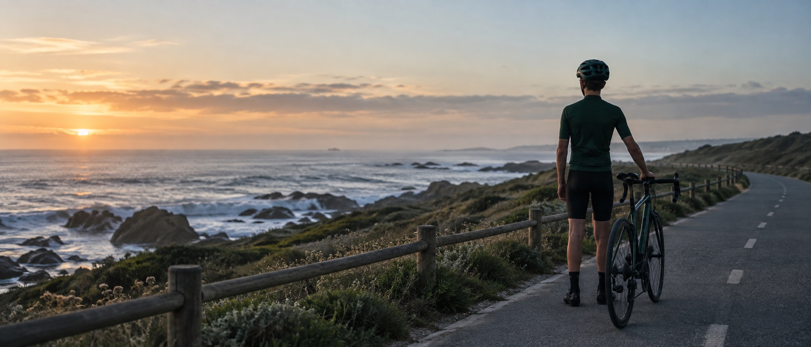

Performance
Competir ao mais alto nível possível.

Introduz o teu código de acesso para entrar na área reservada do Universo Leça.
Leça Cycling
Investor Room

Uma equipa capaz de levar o nome do Leça mais longe do que nunca.
Competição profissional. Formação. Tecnologia. Um projeto criado para transformar o ciclismo e projetar o Leça Futebol Clube nacional e internacionalmente.
Não partimos de uma ideia. Partimos de uma estrutura preparada para dar o próximo passo.
O Leça Cycling Project nasce da oportunidade de integrar e fazer evoluir uma estrutura profissional já existente, com experiência competitiva, organização, parceiros e presença no calendário nacional e internacional.
O desafio não é construir uma equipa.
É transformar uma estrutura existente num projeto desportivo com uma nova dimensão.
Uma base operacional já existente, suportada pelo atual ecossistema de parceiros e receitas da equipa.
A base existe.
A oportunidade está em transformá-la.
Adicionar um nome seria fácil.
Construir algo diferente é o verdadeiro desafio.
A ambição do Leça Cycling Project é construir um ecossistema onde competição, formação, tecnologia, comunicação e território se reforçam mutuamente.
Competir ao mais alto nível possível.
Criar um caminho para a próxima geração.
Transformar dados em conhecimento e inovação.
Transformar competição em conteúdo e audiência.
Levar Leça da Palmeira e Matosinhos connosco.
Projetar o Leça Futebol Clube nacional e internacionalmente.
Criar valor mensurável para quem acredita no projeto.
Aproximar pessoas, empresas e território.
Cada quilómetro será uma oportunidade para levar o Leça mais longe.
A base competitiva que leva a identidade do Leça para a estrada.
Uma equipa compete.
Um ecossistema cria valor.
Não procuramos financiamento para garantir a sobrevivência de uma equipa.
Procuramos parceiros para acelerar a sua transformação.
Construção da nova marca e posicionamento Leça Cycling.
Preparação e lançamento do projeto de formação.
Desenvolvimento da infraestrutura tecnológica e do Performance Lab.
Criação de uma plataforma moderna de comunicação e conteúdo.
Reforço da presença e notoriedade da marca Leça.
Um grupo restrito de parceiros que participará na fase fundadora desta nova etapa.
Conhece a oportunidade.
Agora conhece o plano.
Da equipa profissional à formação.
Da tecnologia à comunicação.
Do território à internacionalização.
É assim que queremos construir o futuro.
Explorar o BlueprintA arquitetura da próxima etapa.
Não estamos a desenhar uma equipa para um dia competir.
Estamos a construir sobre uma estrutura que já conhece o ciclismo profissional.
O ponto de partida do Leça Cycling Project é uma estrutura profissional já em funcionamento, com organização técnica, corredores, parceiros, equipamentos, logística e experiência acumulada no ciclismo português.
Isto permite-nos começar de um lugar muito diferente.
Em vez de investir os primeiros anos a construir as condições necessárias para chegar à estrada, podemos concentrar-nos em transformar aquilo que já existe.
Uma nova identidade não significa começar novamente.
Significa colocar experiência acumulada ao serviço de uma nova ambição.
Tem estradas, cidades, montanhas e milhares de quilómetros.
Calendário da estrutura profissional — época 2026
Uma demonstração do nível e alcance competitivo da estrutura que serve de base ao projeto. Representação ilustrativa do alcance competitivo.O ciclismo tem uma característica difícil de replicar noutros desportos.
A competição desloca-se. A equipa atravessa cidades, regiões e países. A camisola viaja. Os parceiros viajam. E as marcas que representamos viajam connosco.
O Leça Cycling Project transforma cada quilómetro numa oportunidade de projeção.
Quando a equipa parte para competir, não leva apenas uma camisola.
Leva uma origem.
Leça da Palmeira representa a identidade. Matosinhos representa o território. O Leça Futebol Clube representa a paixão e a história que lhes dá voz.
Da nossa terra para todas as estradas.
O Leça Cycling Project não pretende simplesmente substituir uma marca por outra.
Pretende aproveitar uma base profissional existente para construir uma organização diferente.

Uma equipa profissional cria referências.
Uma Academia cria futuro.
O verdadeiro legado de um projeto desportivo não se mede apenas pelos resultados da equipa profissional.
Mede-se também pelas oportunidades que consegue criar para quem vem a seguir.
A Leça Cycling Academy nasce dessa ambição.
Queremos criar em Leça da Palmeira e Matosinhos uma porta de entrada para crianças e jovens descobrirem o ciclismo num ambiente estruturado, seguro e orientado para o desenvolvimento.
Primeiro contacto com a modalidade.
Técnica, segurança e cultura desportiva.
Desenvolvimento progressivo do atleta.
Nem todos terão de chegar ao ciclismo profissional.
Mas todos deverão encontrar um caminho para evoluir.
Para aqueles que demonstrarem talento, compromisso e potencial, queremos que exista uma possibilidade que hoje poucas estruturas conseguem oferecer: ver claramente o caminho até à equipa profissional.
O Leça Futebol Clube acredita que a formação desportiva deve ir muito além da performance.
São competências que permanecem muito depois de terminar uma corrida.
O projeto nasce em Leça da Palmeira.
Cresce em Matosinhos.
E pretende criar oportunidades para jovens de todo o território.
Quanto mais longe queremos chegar, mais importantes são as nossas raízes.
A Academy poderá também tornar-se uma plataforma de aproximação às escolas e à comunidade, utilizando a bicicleta como instrumento de desporto, educação, mobilidade e promoção de estilos de vida saudáveis.
Linhas futuras de desenvolvimento — não representam programas ou protocolos já estabelecidos.
E se conseguíssemos acompanhar esse percurso desde o primeiro treino?
Formar melhor também significa conhecer melhor.
O objetivo é preparar o lançamento da vertente de formação do Leça Cycling Project em 2027, criando progressivamente as bases para um modelo sustentável de desenvolvimento de jovens atletas.
É compreender melhor.
O Leça Futebol Clube quer construir uma cultura de performance onde dados, conhecimento e experiência ajudam atletas e equipas técnicas a tomar melhores decisões.
Um atleta não é um conjunto de números.
Os dados apenas nos ajudam a compreender melhor a sua evolução.
Potência, carga de treino, resultados, evolução e histórico podem produzir milhares de pontos de informação.
O desafio não é recolher mais dados.
É transformar informação em conhecimento útil para atletas e equipas técnicas.
O verdadeiro valor dos dados está também na continuidade.
O Performance Lab pretende criar uma ponte entre formação e alto rendimento.
A mesma cultura. Os mesmos princípios. Uma visão integrada sobre desenvolvimento e performance.
O modelo deverá respeitar sempre a idade, o contexto e a fase de desenvolvimento de cada atleta.
Amplifica-a.
O Performance Lab não pretende substituir treinadores, diretores desportivos ou especialistas.
Pretende dar-lhes melhores ferramentas para compreender informação, identificar tendências e apoiar decisões.
Compreender carga e evolução.
Equipas mudam. Atletas entram e saem. Equipas técnicas evoluem.
Mas uma organização inteligente deve conseguir preservar aquilo que aprende.
O Performance Lab pretende transformar experiência em memória institucional.
O ciclismo poderá ser o primeiro laboratório de uma cultura de dados e performance que, no futuro, poderá gerar conhecimento aplicável a outras áreas do Leça Futebol Clube.
O ciclismo como laboratório.
O Leça Futebol Clube como plataforma.
O projeto pretende demonstrar que inovação, tecnologia e desporto de alto rendimento também podem nascer em Leça da Palmeira e ser projetados muito além do território.
Até aqui falámos sobre aquilo que queremos compreender.
Agora falta explicar como.
O Leça Futebol Clube pretende utilizar o ciclismo como um laboratório real para explorar como dados, software e inteligência artificial podem transformar performance, comunicação e relação com parceiros e adeptos.
Em vez de desenvolver soluções isoladas, queremos construir progressivamente uma camada tecnológica capaz de ligar as diferentes áreas do projeto.
A OTW será o parceiro tecnológico e de inovação do Leça Cycling Project, trabalhando com o Leça Futebol Clube na conceção e desenvolvimento progressivo da infraestrutura digital do projeto.
O primeiro desafio será organizar informação que hoje tende a viver em diferentes sistemas, ficheiros e plataformas.
Uma base tecnológica comum permite começar a criar memória digital do projeto.
A inteligência artificial terá valor apenas quando conseguir reduzir complexidade, identificar informação relevante ou automatizar tarefas que hoje consomem tempo.
Como evoluiu este atleta nas últimas oito semanas?
Resposta demonstrativaTendência positiva na carga sustentada. A equipa técnica deverá interpretar esta informação no contexto do atleta.
A IA não decide pelo treinador.
Ajuda-o a chegar mais rapidamente à informação.
A IA deverá apoiar a equipa de comunicação, preservando sempre o controlo editorial humano.
A velocidade da estrada exige também velocidade na comunicação.
A experiência digital do ciclismo deverá nascer integrada no ecossistema Universo Leça, não como um silo separado.
O objetivo é evoluir progressivamente de um modelo de patrocínio baseado apenas em exposição para uma relação onde os parceiros conseguem compreender melhor o impacto da sua participação.
À medida que o projeto acumula dados, processos e histórico, poderá tornar-se possível construir uma representação digital cada vez mais completa da organização.
O ciclismo poderá funcionar como primeiro laboratório de uma infraestrutura tecnológica que, no futuro, poderá servir diferentes áreas do Leça Futebol Clube.
Não estamos a desenvolver tecnologia apenas para uma equipa de ciclismo.
Estamos a experimentar tecnologia para o futuro do Leça Futebol Clube.
O Leça Cycling Project pretende também associar Leça da Palmeira e Matosinhos a uma imagem de inovação, tecnologia e desporto moderno.
Começar pequeno.
Construir bem.
Escalar aquilo que cria valor.
A tecnologia não deve ser a história.
A tecnologia deve ajudar-nos a contar histórias melhores.
Uma equipa profissional percorre milhares de quilómetros. Mas aquilo que queremos construir vai muito além da estrada.
O objetivo é construir uma plataforma de comunicação ativa durante todo o ano.
365 dias de projeto.
365 dias de histórias.
Queremos que os adeptos conheçam os atletas antes de conhecerem apenas os seus resultados.
Pessoas criam ligação.
Ligação cria comunidade.
O Leça Cycling Project é uma vertical premium integrada no ecossistema Universo Leça.
Uma infraestrutura editorial moderna permite transformar cada momento em diferentes formatos, adaptados a diferentes canais e audiências.
A tecnologia acelera.
A equipa editorial decide.
A exposição externa continuará a ser importante. Mas uma marca forte precisa também de canais que controla, audiência que conhece e histórias que consegue preservar.
Da audiência emprestada
para a audiência própria.
Uma camada editorial para complementar a experiência televisiva e digital, quando a informação estiver disponível e puder ser utilizada.
O ciclismo permite ao Leça Futebol Clube transportar consigo uma identidade e um território. Em cada prova existe uma oportunidade para projetar a marca do clube e dar visibilidade a Leça da Palmeira e Matosinhos.
Leça da Palmeira e Matosinhos não precisam de aparecer apenas como um nome numa camisola. Podem fazer parte da própria narrativa.
O território deixa de ser um patrocinador visual.
Passa a ser conteúdo.
Queremos criar relações onde os parceiros possam participar na história do projeto de forma relevante para as suas marcas e audiências.
Uma equipa profissional produz naturalmente aquilo que as grandes histórias precisam: personagens, ambição, conflito, sacrifício, incerteza e emoção.
Visão editorial para conteúdo próprio do Universo Leça. Sem plataforma de distribuição definida.
Não queremos apenas documentar resultados.
Queremos documentar uma geração.
Cada fotografia, entrevista, etapa e história poderá contribuir para construir a memória digital do projeto.
Uma instituição centenária
sabe o valor da memória.
O nosso começa aqui.
Leça da Palmeira Matosinhos · PortugalO Leça Futebol Clube nasceu de uma comunidade. Mais de um século depois, essa ligação continua a definir a identidade da instituição.
O Leça Cycling Project pretende levar essa identidade para a estrada.
Cada deslocação transforma a competição numa oportunidade de projeção territorial.
O ciclismo cria uma plataforma singular: atletas, equipamentos, conteúdos e competição deslocam-se continuamente entre territórios.
Essa mobilidade pode transformar-se numa oportunidade de promoção para as regiões representadas pelo projeto.
O território pode fazer parte das histórias que contamos, das experiências que criamos e da identidade que levamos para cada competição.
O território deixa de ser um patrocinador visual.
Passa a ser conteúdo.
A identidade atlântica de Leça da Palmeira e Matosinhos pode tornar-se parte da linguagem visual e narrativa do projeto.
A gastronomia é uma das formas através das quais um território constrói identidade e memória.
O projeto pode ajudar a levar essa identidade a novas audiências através de conteúdos, experiências e ativações.
O Leça Cycling Project pode contribuir para associar Matosinhos não apenas a território e turismo, mas também a desporto moderno, tecnologia, inovação e alto rendimento.
O projeto poderá criar oportunidades de aproximação às escolas e às famílias, utilizando a bicicleta como ponto de encontro entre desporto, educação e comunidade.
O ciclismo profissional pode ser o elemento mais visível de uma relação muito mais ampla com a bicicleta.
Uma equipa que viaja também pode criar razões para que outros venham até ao território.
O projeto poderá criar novas oportunidades de ligação entre o Leça Futebol Clube, empresas do território e parceiros nacionais e internacionais.
Cada prova fora do território cria uma oportunidade para transportar consigo a origem do projeto.
Mas não queremos ficar aqui.
Uma marca preparada para viajar.
Ambição precisa de sustentabilidade.
13 / Business ModelO objetivo não é apenas criar um projeto capaz de competir.
É construir progressivamente uma organização capaz de sustentar a sua ambição.A estrutura profissional que serve de base ao projeto opera atualmente com um orçamento anual aproximado de 850 mil euros, suportado pelo seu atual ecossistema de parceiros, patrocínios e receitas.
Orçamento anual da estrutura atual
Ecossistema atual de financiamentoNão representa capital a angariar pelo Leça Futebol Clube.
A equipa já tem
uma economia.
Operação anual aproximada da estrutura profissional existente.
Ronda estratégica para acelerar a transformação do projeto.
Uma estrutura para operar.
Uma ronda para transformar.
Não procuramos financiamento para garantir a sobrevivência de uma equipa.
Procuramos parceiros para acelerar a sua transformação.
A sustentabilidade do Leça Cycling Project não deverá depender de uma única fonte de receita. Queremos construir progressivamente um ecossistema económico diversificado.
O ciclismo profissional tem historicamente uma forte relação com marcas e parceiros. O nosso objetivo é evoluir essa relação.
Do patrocínio de visibilidade
para uma plataforma de criação de valor.
A dimensão territorial, formativa e comunitária do projeto poderá criar oportunidades de colaboração institucional para além do patrocínio desportivo tradicional.
Algumas das futuras linhas de receita poderão nascer daquilo que acontece para além da competição.
A Academy deverá nascer primeiro como projeto de desenvolvimento desportivo.
À medida que crescer, poderá também contribuir para um ecossistema mais amplo através de parceiros, programas, eventos e outras iniciativas associadas à formação.
Construir canais próprios e uma audiência identificável aumenta progressivamente o valor do ecossistema para parceiros e abre novas possibilidades de desenvolvimento.
A infraestrutura tecnológica desenvolvida para o ciclismo poderá gerar conhecimento, propriedade intelectual e soluções reutilizáveis noutras áreas do Universo Leça.
O desempenho cria histórias.Histórias criam audiência.Audiência cria valor.O valor permite investir novamente no desempenho.
Um projeto sustentável não deverá depender excessivamente de uma única marca, entidade ou fonte de receita.
Diversificar para durar.
A evolução do projeto deverá ser acompanhada por disciplina orçamental, objetivos claros, acompanhamento de resultados e transparência com os parceiros.
O Leça Cycling Project não pretende utilizar a ronda estratégica para tentar construir uma equipa profissional do zero.
Pretende utilizar uma estrutura já operacional como plataforma para criar algo maior.
Menos capital para começar.
Mais capacidade para acelerar.
Construir um projeto preparado para durar.
O Leça Cycling Project pretende evoluir por etapas.
Este roadmap representa uma intenção estratégica. Os objetivos dependentes de validação, parceiros ou condições externas não constituem compromissos contratuais.
Este período representa preparação e estruturação.
Preparar o enquadramento da nova fase do projeto.
Consolidar parceiros estratégicos e desenvolver novas relações.
Preparar a identidade do Leça Cycling Project.
Estruturar o modelo económico e operacional.
Definir a arquitetura tecnológica e prioridades de desenvolvimento.
Preparar o modelo de formação para 2027.
Preparar a estratégia de lançamento e comunicação.
Antes de acelerar, precisamos de garantir que organização, identidade, parceiros e tecnologia avançam na mesma direção.
Construir primeiro.
Acelerar depois.
O objetivo é fazer convergir as diferentes dimensões do projeto numa nova organização.
Consolidar a nova identidade competitiva do projeto.
Iniciar progressivamente a vertente de formação.
Implementar as primeiras capacidades de acompanhamento e conhecimento sobre desempenho.
Construir a primeira versão da infraestrutura digital do projeto.
Lançar uma estratégia editorial contínua integrada no Universo Leça.
Desenvolver um novo modelo de ativação e relação com parceiros.
Criar as primeiras iniciativas de ligação entre competição, Leça da Palmeira e Matosinhos.
2027 não é apenas uma nova época.
É o início de uma nova organização.
O segundo passo não é adicionar complexidade. É fazer funcionar melhor aquilo que começámos a construir.
Consolidar estabilidade competitiva e organizacional.
Desenvolver progressivamente o percurso de formação.
Aumentar a profundidade do conhecimento acumulado.
Integrar mais processos e fontes de informação.
Aumentar consistência e qualidade do ecossistema de conteúdos.
Aprofundar ativação e capacidade de demonstrar valor.
Desenvolver iniciativas de maior ligação à comunidade e ao território.
De iniciativas isoladas
para um ecossistema.
Nesta fase, ambicionamos aprofundar as capacidades que demonstrarem maior impacto e consistência.
A visão de longo prazo é construir uma organização onde competição, formação, tecnologia, comunicação e território funcionem como partes do mesmo sistema.
Algumas das capacidades desenvolvidas no ciclismo poderão, ao longo do tempo, gerar conhecimento, processos e tecnologia aplicáveis a outras áreas do Leça Futebol Clube.
Construir connosco.
15 / PartnersO Leça Cycling Project pretende construir relações que vão além da presença de uma marca num equipamento.
Diferentes parceiros. Diferentes objetivos. Uma plataforma comum.
Mas estar presente pode significar muito mais.
Da exposição
para a participação.
Selecione um objetivo para explorar as dimensões do projeto que poderão ser mais relevantes para a sua organização.
Competição e exposição.
O ciclismo permite que uma marca acompanhe a equipa através de diferentes contextos competitivos, territoriais e digitais.
Os parceiros poderão encontrar oportunidades para participar em conteúdos relevantes para a sua própria identidade e audiência.
Da presença
para a narrativa.
O projeto poderá criar oportunidades para empresas tecnológicas testarem, desenvolverem ou demonstrarem soluções num contexto desportivo real.
A Academy poderá permitir que parceiros associem a sua participação ao desenvolvimento de jovens, formação desportiva e comunidade.
O ciclismo poderá criar uma plataforma singular para entidades interessadas em promoção territorial, comunidade, mobilidade e projeção externa.
O projeto pretende explorar experiências capazes de aproximar parceiros, clientes, equipas e comunidade.
O objetivo é criar progressivamente um ecossistema onde parceiros possam também conhecer-se, relacionar-se e identificar oportunidades entre si.
A parceria
cria rede.
A ambição é desenvolver progressivamente melhores ferramentas para compreender o impacto das ativações e melhorar a relação com cada parceiro.
Medir. Aprender.
Melhorar.
A parceria deve começar no objetivo.
Não no pacote.
Os primeiros parceiros terão a oportunidade de participar numa fase em que identidade, tecnologia, Academy, comunicação e modelo de ativação ainda estão a ser construídos.
Selecione até três objetivos. Esta experiência serve apenas para descobrir combinações possíveis dentro do ecossistema.
Experiência conceptual, sem preços ou proposta comercial.
O Leça Cycling Project parte de uma estrutura profissional já operacional.
A ronda estratégica de 150 mil euros tem outro objetivo: acelerar a sua transformação.
Orçamento anual aproximado da estrutura profissional existente.
Objetivo da ronda estratégica de aceleração.
O orçamento operacional permite colocar uma estrutura profissional na estrada. O capital de aceleração pretende ajudar a construir aquilo que queremos acrescentar a essa estrutura.
A oportunidade nasce precisamente porque não partimos de uma folha em branco. Existe uma base profissional sobre a qual podemos construir.
Não estamos a financiar o primeiro quilómetro.
Estamos a financiar a transformação.
É nesse espaço que queremos concentrar a ronda estratégica.
O objetivo não define uma distribuição financeira fechada. Identifica as áreas estratégicas onde a ronda pretende criar capacidade.
Construir a identidade e o posicionamento do Leça Cycling Project.
Preparar e iniciar o projeto de formação.
Desenvolver as primeiras capacidades tecnológicas e do Performance Lab.
Construir uma plataforma moderna de comunicação e conteúdo.
Preparar a marca e o projeto para uma projeção progressivamente mais ampla.
O objetivo da ronda não é apenas financiar despesas.
É criar capacidades que permaneçam no projeto.
Explore a mudança que cada frente de aceleração poderá ajudar a iniciar.
Acelerar a construção de uma identidade própria.
A existência de uma estrutura operacional permite direcionar a ronda para transformação em vez de concentrar todo o capital na criação da operação de base.
Construir sobre
o que já existe.
A fase fundadora do projeto poderá beneficiar particularmente de organizações capazes de acrescentar conhecimento, tecnologia, relações ou capacidade de ativação para além da componente financeira.
A estrutura de cada participação deverá ser construída em função do parceiro, dos objetivos comuns e do enquadramento adequado.
É esse momento.
Antes da escala.
Durante a construção.
A ronda pretende criar as condições para acelerar a primeira grande fase de transformação do projeto.
A utilização dos recursos deverá estar associada a objetivos, acompanhamento orçamental e comunicação transparente com os parceiros envolvidos.
Ambição com
disciplina.
O sucesso da ronda deverá ser medido pela capacidade que deixa instalada no projeto.
Nova identidade e organização.
Capacidade de iniciar formação.
Primeiras capacidades digitais.
Infraestrutura editorial e conteúdo.
Ecossistema de relações.
Maior capacidade de projeção.
Maior capacidade de ativação.
Capital passa.
Capacidade fica.
Os primeiros.
17 / Founding PartnersO Leça Cycling Project encontra-se numa fase em que identidade, formação, tecnologia, comunicação, território e modelo de parceria estão a ser construídos.
É esta fase que cria a oportunidade fundadora.
Quando o projeto estiver consolidado, continuarão a existir oportunidades de parceria. Mas a oportunidade de participar na sua construção existe apenas agora.
Ser fundador é um momento.
Não um pacote.
Selecione uma dimensão para compreender o tipo de contributo que poderá fazer sentido nesta fase.
Participar numa fase de construção do novo posicionamento.
Uma parceria fundadora poderá assumir diferentes formas, desde que exista uma contribuição relevante para a construção do projeto.
O que podemos
construir juntos?
Em determinadas áreas, a fase fundadora poderá permitir desenvolver iniciativas em conjunto desde a sua origem, alinhando os objetivos do parceiro com as necessidades do projeto.
Os primeiros parceiros farão parte da história da transformação do projeto.
Fazer parte
do começo.
O projeto pode estar a começar.
O clube não.
Uma nova etapa.
Sobre raízes com mais de um século.
A fase fundadora também representa uma oportunidade para organizações que partilhem uma ligação ou interesse no desenvolvimento, projeção e comunidade do território.
A ambição é que a fase fundadora reúna organizações com competências, redes e objetivos complementares.
A forma de reconhecimento deverá ser definida individualmente em cada parceria e refletir a contribuição efetiva para o projeto.
É uma relação diferente. Não representa simplesmente mais exposição. Representa participação numa fase diferente da vida do projeto.
Momento diferente.
Relação diferente.
Não precisamos de criar um contador. O próprio desenvolvimento do projeto fechará naturalmente esta fase.
Existe apenas
um começo.
Selecione as áreas que mais se aproximam da sua organização.
Nenhuma área selecionada.
Construir o
próximo capítulo.
Construir o próximo capítulo.
18 / Join the ProjectO Leça Cycling Project está a entrar numa fase em que os parceiros certos podem ajudar a transformar uma estrutura profissional numa plataforma de competição, formação, tecnologia, comunicação e território.
Iniciar conversaEscolha as dimensões que fazem sentido para a sua organização. Pode selecionar várias opções e alterá-las livremente.
Um resumo local e dinâmico das escolhas realizadas ao longo da experiência.
Por selecionar
Por selecionar
Opcional
Selecione uma ou mais dimensões para revelar ligações possíveis.
Pedimos apenas a informação necessária para que o Leça Futebol Clube possa responder a esta manifestação de interesse.
Mais de um século depois, continuamos a acreditar que ainda existem novas estradas por percorrer.
Vamos mais longe.
Iniciar conversaObrigado por fazer parte desta conversa.